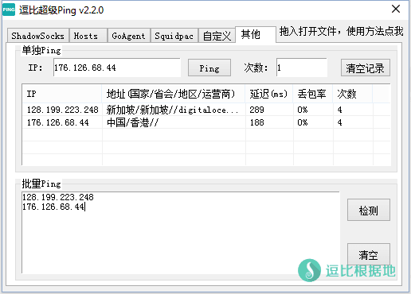
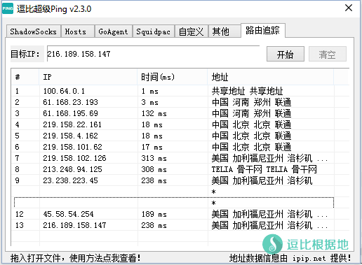

最开始用Shadowsocks的时候，收集了大量的账号，但是免费账号稳定性都很一般，指不定哪天就失效了，所以写了这个软件。
这个软件的主要作用就是批量Ping IP，是一个科学上网的辅助工具，通过得出的结果（延迟）判断出哪个账号可以用，哪个延迟低，从而省力的不需要一个一个Ping。
本来这个软件是很早的是我写的，已经大半年没管了，后来被一些逗比发现，催我更新，于是我就开始继续更新了~但是我悲催的发现最新的源码找不到了，只找到了1.0.6版本的，最后改了改几乎整个框架都改动了。。。
注意：因为这是我几年前写的，技术不过关，各种东拼西凑，太乱了，所以已经放弃更新了，不建议使用！
当前版本：2.3.10
主要功能
- 支持Shadowsocks、ShadowsocksR、Hosts和GoAgent。
- 支持自定义文件、次数、显示IP地址。
- 支持路由追踪。
- 使用简单，软件轻便。
截图展示
下面的图片版本较老了。



使用方法：
- 直接拖拽 gui-config.json 文件到窗口即可导入
- 点击 [Ping]，然后等待Ping完成，也可以右键 单独Ping
- 右键选项可以 单独Ping IP，可以 复制Ping结果。
- 路由追踪输入IP，然后点击 [开始] 即可。
更新内容：
版本2.3.10 日期2017年11月19日
1.新增 单独Ping列表中加入 显示丢包数功能。
2.更换 单独Ping的IP地址获取源。
3.优化 路由追踪逻辑，当路由数超过30个时会终止。
—— 绝大部分情况下不会超过30个，为了避免无限路由下去，将会自动终止。
4.移除 SquidPAC选项。
下载地址：
有问题或者反馈BUG请在下面留言！
注意事项：
- 软件仅支持Windows系统，对于Linux和Mac用户说声抱歉。
- Windows 7以后的系统如无法使用，请用管理员模式启动。
- 软件由易语言编写，所以一些杀毒软件可能报毒，我再次保证，我原创的软件绝对没有病毒！
转载请超链接注明：逗比根据地 » 『原创』逗比超级Ping — 支持Shadowsocks、Goagent、Host、路由追踪
责任声明：本站一切资源仅用作交流学习，请勿用作商业或违法行为！如造成任何后果，本站概不负责！


如果你需要批量测试Shadowsocks账号的可用性，你可能需要 SS Cap 客户端，他可以做到，当然还需要你手动添加节点。